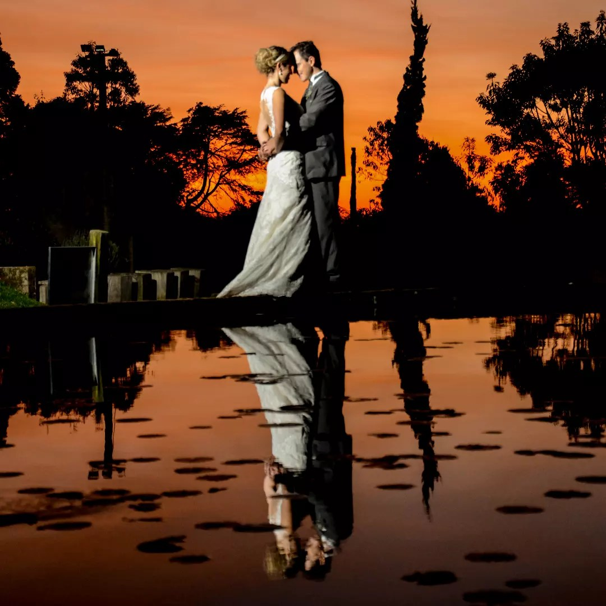
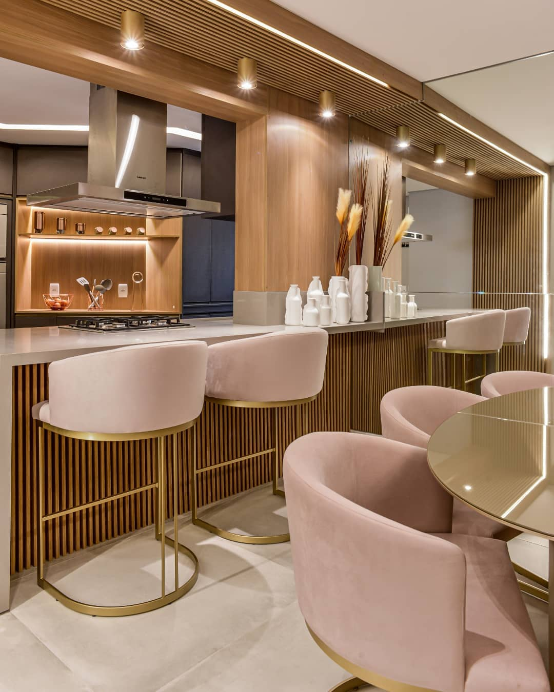

O instante
Casamentos e retratos
Ver casamentos
O lugar
Arquitetura, interiores e imóveis
Ver projetosToda vida acontece em algum lugar. Há 25 anos, Robson Salgado espera a luz certa para os dois.

O instante encontra o lugar.
Aberta para o instante. Fechada para o lugar.
Na câmera, a abertura larga isola um rosto e deixa o mundo macio. A abertura pequena põe tudo em foco, da maçaneta à montanha.
É o mesmo gesto, nas duas pontas da escala.
Trabalhos selecionados


Discreto no dia. Presente na memória.
A atenção fica com os noivos. A fotografia acontece em volta, sem interromper.
Ver casamentos
O projeto visto como foi sonhado.
Luz, linha e escala para arquitetos, construtoras e imobiliárias que vendem pelo detalhe.
Ver projetos“Eu fotografo com o coração.”Robson Salgado
Conhecer o Robson

A fotografia também mora na parede.
Séries autorais em tiragem limitada, do mar ao céu da serra.
Experimentar na parede